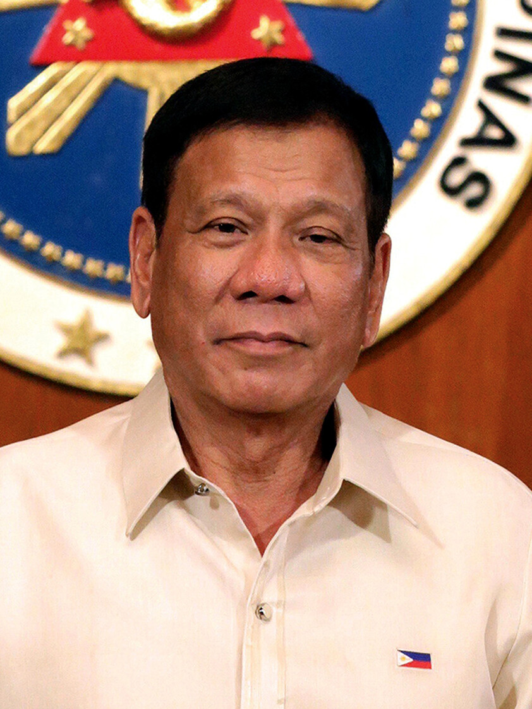

War on Drugs
His signature campaign. Police report roughly 6,200 deaths in operations; rights groups estimate 12,000–30,000 including vigilante killings — a toll that drew global criticism and, eventually, the ICC case.
2016–202216th President of the Philippines · 2016–2022
"Digong" to friends, "DU30" to the nation that elected him at 71 — a Davao City prosecutor turned longtime mayor who rose to become the first Filipino president from Mindanao, and one of the most consequential and polarizing leaders in modern Philippine history.

Biography
Four decades in the politics of a single city — and a presidency that followed.
Rodrigo Roa Duterte was born on March 28, 1945, in Maasin, Southern Leyte, before the close of World War II. His father, Vicente Duterte, was a lawyer who served as governor of the then-undivided Davao province; his mother, Soledad Roa, was a teacher and school administrator. Though born in the Visayas, he was raised largely in Davao City — the place that would define his political identity.
He completed his secondary studies at Ateneo de Davao, earned a bachelor's degree in political science from the Lyceum of the Philippines in 1968, and obtained his law degree from San Beda College in 1972, passing the bar the following year.
Duterte spent the late 1970s and early 1980s in the Davao City prosecution office — first as special counsel, then as city prosecutor (1979–1986). After the 1986 EDSA People Power Revolution, he was appointed officer-in-charge vice mayor of Davao City — the starting point of a political career spanning four decades and nearly every post at city hall.
His long grip on Davao — a city he governed for more than 20 years across three stints — was built on a reputation for uncompromising, strong-armed crime-fighting that made "The Punisher," as media called him, a national political figure long before he sought the presidency.
Career
From wartime Leyte to a cell block in The Hague — the milestones of Rodrigo Duterte's life and career.
Born March 28 in Maasin, Southern Leyte, to lawyer Vicente Duterte and teacher Soledad Roa. The family later moves to Davao, where his father becomes provincial governor.
Political science degree from the Lyceum of the Philippines (1968); law degree from San Beda College (1972); passes the Philippine bar in 1973.
Serves Davao City as special counsel, then city prosecutor. After the 1986 EDSA People Power Revolution, he is appointed officer-in-charge vice mayor.
Wins the Davao mayoralty — the first of three consecutive terms. His hard-line stance on crime makes him a national name.
Term-limited as mayor, he represents Davao City's 1st district in the House of Representatives.
Wins back the mayoralty and serves two more terms, cementing his image as Davao's indispensable strongman.
Serves as vice mayor while daughter Sara Duterte holds the city's top post.
Returns as mayor. In late 2015 he announces a presidential run, upending the national race.
Wins the May 9 election with about 16.6 million votes in a five-way contest. Inaugurated June 30 at 71 — the oldest elected president and the first from Mindanao.
Launches the war on drugs and Build! Build! Build!, signs landmark social laws, steers the country through the COVID-19 pandemic, and pulls the Philippines out of the Rome Statute (effective March 17, 2019).
Steps down on June 30 with consistently high approval ratings. Daughter Sara is elected vice president on the winning Marcos ticket.
Arrested in Manila on March 11 on an ICC warrant and flown to The Hague. Two months later, from detention, he wins the race for mayor of Davao City.
The ICC confirms charges of crimes against humanity (murder) on April 23. Trial is scheduled to open November 30, 2026; he remains in custody.
The Presidency
Elected on a single word — change — Duterte governed from the right and the left at once: cracking down on crime while expanding health care, education, and infrastructure.
His signature campaign. Police report roughly 6,200 deaths in operations; rights groups estimate 12,000–30,000 including vigilante killings — a toll that drew global criticism and, eventually, the ICC case.
2016–2022The billed "Golden Age of Infrastructure": expressways, railways, airports, and bridges across the archipelago, funded in part by landmark tax reform.
2017–2022RA 11223 automatically enrolls every Filipino in PhilHealth — one of the most far-reaching health reforms in the country's history.
RA 11223 · 2019RA 10931 makes tuition free in state universities and colleges — a first for the Philippines.
RA 10931 · 2017RA 10963 cuts personal income taxes for millions of workers while raising excise taxes to bankroll the infrastructure program.
RA 10963 · 2017RA 11054 creates the Bangsamoro Autonomous Region — capping decades of peace negotiations with Muslim Mindanao.
RA 11054 · 2018RA 11463 institutionalizes one-stop shops where poor patients can find medical and financial assistance in a single visit.
RA 11463 · 2019Led the country through one of the world's longest lockdowns and a mass vaccination drive, amid record borrowing and a deep recession.
2020–2022The Hague File
The first former Asian head of state in the court's custody. Milestones verified against ICC records.
The Philippines ratified the Rome Statute in 2011. Duterte ordered withdrawal in March 2018, effective March 17, 2019 — but the court retains jurisdiction over alleged crimes committed while the country was a member.
Despite his detention, Duterte won the May 2025 race for mayor of Davao City — the post where his political career began. His trial is set to be one of the most closely watched in the court's history.
Official ICC case page ↗Legacy
Few modern leaders inspire such opposing verdicts. Both sides of the ledger, stated plainly.
Historians will spend decades weighing the question Filipinos lived through: whether the order he imposed was worth the cost it exacted.